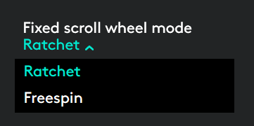

Roda de rolagem que se adapta à velocidade
Se a função SmartShift™ estiver ativada, a roda de rolagem que se adapta à velocidade alterna entre os dois modos de rolagem automaticamente, de acordo com o seu toque.
- Modo clique-a-clique (catraca) - ideal para navegação precisa por diferentes itens ou listas.
- Modo hiperveloz (rolagem livre) - ideal para percorrer rapidamente documentos grandes e páginas da Web.
Rode para alternar para
|
Pare e rode lentamente
|


Ativar SmartShift
Selecione Ativado no menu suspenso SmartShift na guia Apontar e rolar.

Desative o SmartShift selecionando Desativado no menu suspenso SmartShift.
Quando o SmartShift está desativado, girar ou parar a roda de rolagem não fará com que o modo atual de rolagem seja alterado.
Alternar entre os modos manualmente
Quer o SmartShift esteja ativado ou desativado, você pode alternar manualmente entre os modos pressionando o botão de alternância de modos.
Por padrão, a alternância entre modos pode ser realizada através do botão localizado na parte superior do mouse. (Verifique as atribuições de botão na guia Mouse.)

Definir um modo fixo para a roda de rolagem
Se você preferir usar apenas um modo, defina o modo da roda de rolagem como clique-a-clique (catraca) ou hiperveloz (rolagem livre).
Na aba Apontar e rolar, selecione Catraca ou Rolagem livre no menu suspenso Modo fixo para a roda de rolagem.

IMPORTANTE!
Só é possível definir o modo da roda de rolagem quando o SmartShift estiver desativado e a alternância entre modos não estiver atribuída a nenhum botão do MX Master.
Para ativar o modo fixo para a roda de rolagem
- Selecione Desativado no menu suspenso SmartShift.
- Na guia Mouse, clique no botão de alternância de modos realçado e selecione uma ação diferente de alternância entre modos.
Para obter mais informações, consulte o Guia de imersão do MX Master.